Accepted at EUVIP 2026 · 14th European Conference on Visual Information Processing, Luxembourg
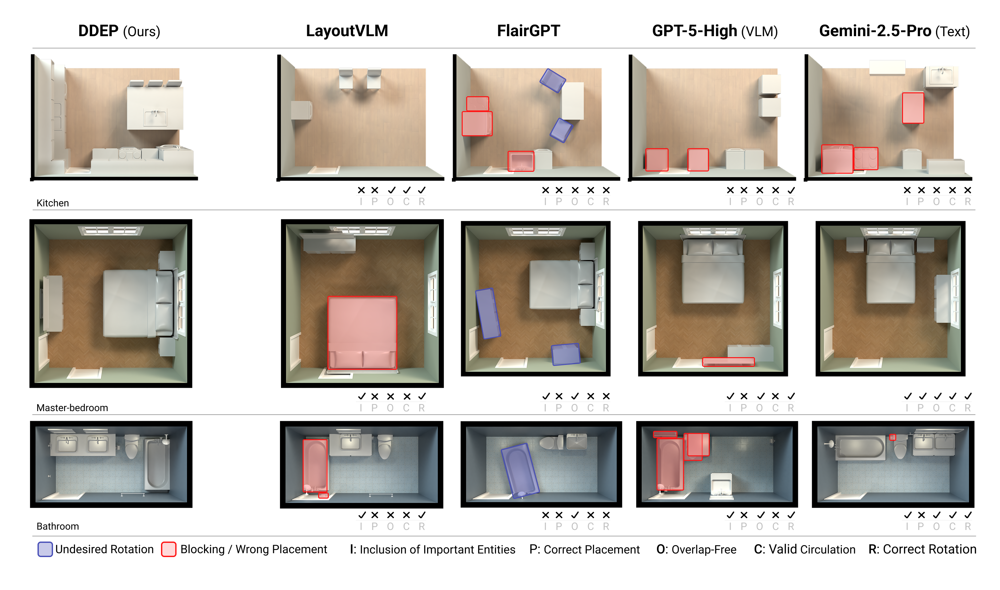
Small Building Model (SBM) is an encoder-decoder Transformer that generates functionally correct and semantically coherent layouts given a room envelope. Each row shows a different room type. Our approach outperforms general-purpose LLMs/VLMs and domain-specific methods.
We present a BIM-native tokenization for room-level layout synthesis in Building Information Modeling (BIM) scenes. The core contribution is representational: we encode each room as a sequence of BIM-Token Bundles, realized as columns of a sparse attribute–feature matrix that unifies categorical and continuous attributes of walls, openings, and entities under wall-referenced (translation/scale-invariant) coordinates.
A mixed-type embedding module produces a unified token vector from this matrix; a single Transformer backbone is then trained in two modes: encoder-only for room embeddings and retrieval, and encoder–decoder for autoregressive entity placement, which we call Data-Driven Entity Prediction (DDEP). On a controlled same-data benchmark with shared ontology and evaluation harness, DDEP outperforms ATISS and BLT baselines bridged into our representation, with ablations identifying joint continuous-feature embedding and entity ordering as primary drivers. Encoder embeddings cluster rooms by type more tightly than large general-purpose text encoders, which in turn retain an edge on within-type ranking. We frame this work as evidence that modestly sized, domain-specific sequence models over well-designed BIM tokenizations are a useful primitive for constraint-aware spatial generation, complementary to general-purpose LLMs/VLMs which we also benchmark.
Our goal is to learn a unified representation for BIM scenes that enables both retrieval (finding similar rooms) and generation (placing furniture, doors, and fixtures). SBM takes as input a room envelope—walls, doors, windows—and produces either room embeddings or a complete layout with placed entities.
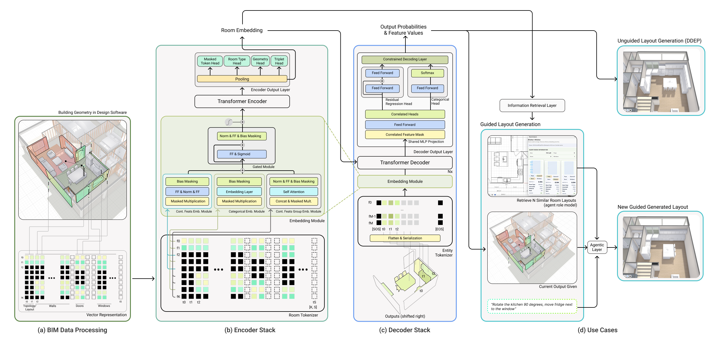
Model Overview. (a) BIM data extraction and assembly into a discrete set of token bundles. (b) SBM encoder stack processes the tokenized feature-attribute matrix and outputs a room representation. (c) SBM decoder stack consumes the room representation as memory to the cross-attention layers and the room entities as inputs, trained on next token prediction. (d) Downstream use cases. Retrieval and unguided layout generation (DDEP) are evaluated in the paper; the user-guided path through an agentic layer is a prospective integration that BIM-native output tokens enable but that we do not evaluate.
We introduce a normalized hierarchical tokenizer that encodes room topology, entity attributes, wall-referenced geometry, and relational structure into compact token bundles realized as rows of a sparse attribute-feature matrix.
A unified embedding module handles both categorical and continuous features, learning joint representations that preserve the compositional structure of architectural elements.
A single Transformer supports encoder-only room embeddings for retrieval and encoder-decoder DDEP for autoregressive layout generation.
The encoder-only pathway produces high-fidelity room embeddings that capture geometric, topological, and semantic properties. These embeddings cluster reliably by room type and topology, achieving NMI: 0.726 (2.0× better than text embedding baselines) and near-perfect type-constrained triplet accuracy (99.9%).
In DDEP mode, the encoder-decoder pipeline autoregressively places room entities (props and casework) conditioned on the room envelope. DDEP produces functionally sound layouts with:
We evaluate SBM under two complementary protocols, exactly as reported in the EUVIP 2026 paper. The controlled same-data benchmark is the lead result: every method is trained from scratch on one frozen split with a shared ontology, canonical furniture dimensions and a single evaluation harness, which isolates architectural effects from data scale. The deployment-style benchmark compares production DDEP against zero-shot frontier LLMs/VLMs and domain-specific systems. Metrics are Cov. (inventory coverage ↑), Nav (door-to-target navigability ↑), SR (reachability ↑), DF (detour factor ↓) and OC (overlap–clearance ↓); they must be read jointly, since a sparse room can score well on OC while failing coverage and reachability.
| Method | Cov. ↑ | Nav ↑ | SR ↑ | DF ↓ | OC ↓ |
|---|---|---|---|---|---|
| ATISS (same-data) | 40.8 ± 23.6 | −30.3 ± 24.0 | 0.03 | 0.97 | 0.5 |
| BLT (same-data) | 17.8 ± 20.4 | −18.6 ± 42.7 | 0.12 | 0.88 | 35.7 |
| DDEP (ours) | 54.9 ± 38.3 | 14.6 ± 56.0 | 0.36 | 0.60 | 13.4 |
| DDEP ablations | |||||
| Wall-only | 50.8 | 9.6 | 0.32 | 0.63 | 12.7 |
| No continuous groups | 42.6 | 0.7 | 0.25 | 0.69 | 13.4 |
| No edge coordinates | 56.7 | 14.4 | 0.35 | 0.60 | 14.5 |
| Order: t first | 42.6 | 4.1 | 0.29 | 0.70 | 10.6 |
| Order: edge, t desc. | 46.5 | 7.8 | 0.31 | 0.66 | 13.4 |
Shared 1,225-room geometry-valid test subset. ATISS's near-zero OC reflects sparse outputs that avoid collisions while leaving almost all targets unreachable; BLT shows the opposite failure mode. Removing the joint continuous-group embedding is the single most damaging change, which is the paper's central evidence that the representation — not model scale — drives performance. ATISS and BLT outputs are bridged into our wall-referenced format; that bridge is applied to the baselines but not to DDEP, so part of the gap may reflect conversion loss.
| Method | Cov. ↑ | Nav ↑ | OC ↓ | Latency (s) ↓ |
|---|---|---|---|---|
| Text-only LLMs | ||||
| Claude Opus 4.6 | 58.9 | −0.8 | 11.3 | 15.6 |
| Claude Sonnet 4.6 | 64.9 | 0.3 | 10.5 | 81.2 |
| Claude Haiku 4.5 | 55.3 | 4.4 | 15.2 | 7.0 |
| GPT-5.2 † | 47.6 | 16.8 | 13.0 | 55.1 |
| Gemini 3.1 Pro ‡ | 63.7 | 20.5 | 9.2 | 67.1 |
| Codex 5.3 | 68.3 | 18.9 | 9.8 | 20.8 |
| Qwen 3.5 | 64.6 | 3.1 | 13.6 | 19.0 |
| Vision-language models (floorplan-conditioned) | ||||
| Claude Opus 4.6 | 61.9 | 55.5 | 8.2 | 15.3 |
| Claude Sonnet 4.6 | 65.6 | 34.6 | 11.0 | 14.8 |
| Claude Haiku 4.5 | 60.7 | 25.2 | 16.2 | 6.9 |
| GPT-5.2 † | 57.0 | 34.9 | 12.1 | 101.7 |
| Gemini 3.1 Pro § | 86.5 | 47.8 | 2.2 | – |
| Qwen 3.5 † | 60.7 | 27.1 | 12.8 | 84.1 |
| Domain-specific methods | ||||
| LayoutVLM | – | 40.3 | 3.8 | 145.0 |
| FlairGPT | 46.6 | 28.2 | 3.9 | 1133.6 |
| DDEP (ours) | 98.1 | 79.2 | 1.9 | 3.18 |
50-room held-out set. All models receive the same tuned prompt with an explicit coordinate system, wall-condition guidance, a room-type-filtered entity catalog for information parity with DDEP, and a matched example of the expected output format — so the gap is not an artifact of naive prompting. It remains a deployment floor rather than an architectural ceiling: each model is run once per room with no best-of-k or chain-of-thought, and no open model is fine-tuned in-domain. †evaluated on a subset (parse success <70%). ‡37/50 rooms. §7/50 rooms, unreliable.
Specification
Near-Complete
Inventory Satisfaction
Navigability
State-of-the-Art
Walkable Paths
Overlap
Lowest
Collision Rate
Clearance
Lowest
Boundary Violations
Our results demonstrate that modestly sized, domain-specific sequence models over well-designed BIM tokenizations can outperform much larger general-purpose systems on layout quality. DDEP delivers functionally sound layouts that satisfy design specifications while maintaining geometric validity and constraint satisfaction.
In encoder-only mode, SBM produces high-fidelity room embeddings that capture geometric, topological, and semantic properties. We compare against strong text embedding baselines (E5-Large-v2, BGE, GTE) on clustering quality and type-constrained retrieval.
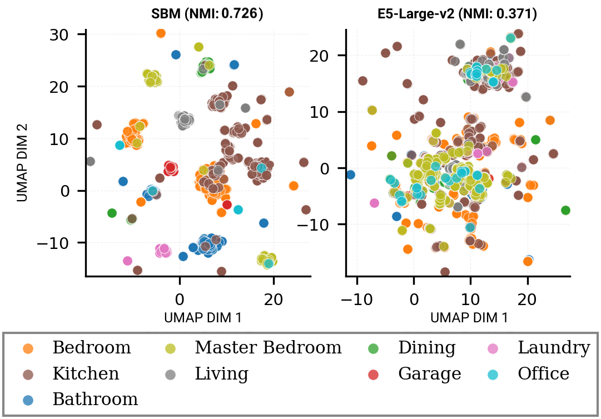
UMAP visualization of room embeddings colored by room type category. SBM embeddings (left, NMI 0.726) form well-separated clusters with distinct boundaries between room types, while E5-Large-v2 embeddings (right, NMI 0.371) show intermingled clusters with blurred boundaries. The roughly 2× higher NMI reflects SBM's specialization in geometric and spatial structure rather than lexical similarity.
NMI Score
0.726
2.0× better than text baselines
Triplet Accuracy
99.9%
Type-constrained retrieval
Entity Overlap
77.0%
Retrieved rooms share similar furniture
SBM autoregressively places entities across diverse room types
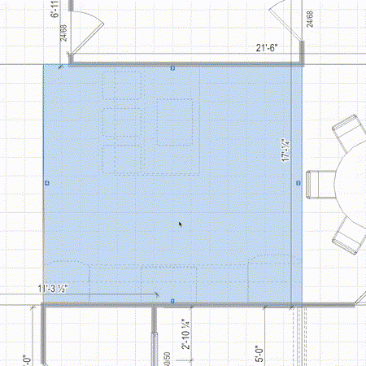
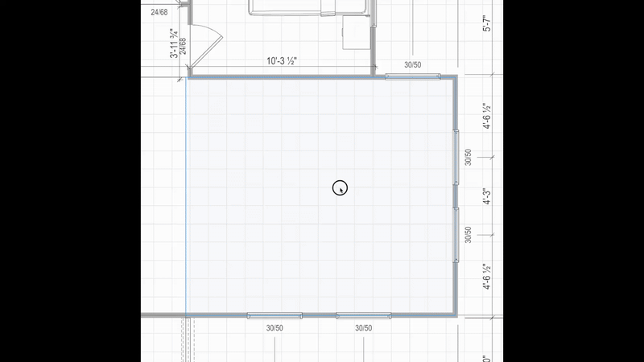
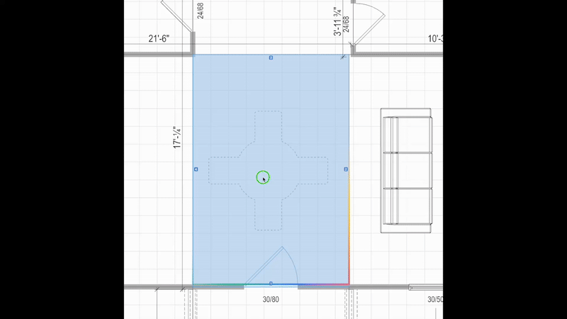
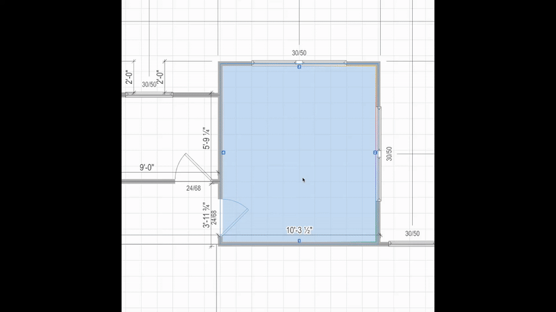
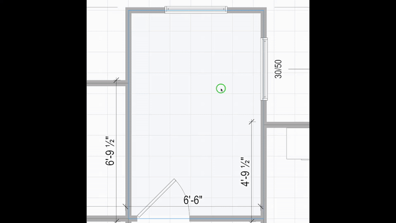
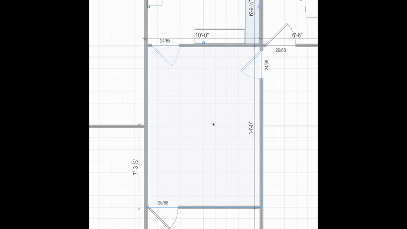
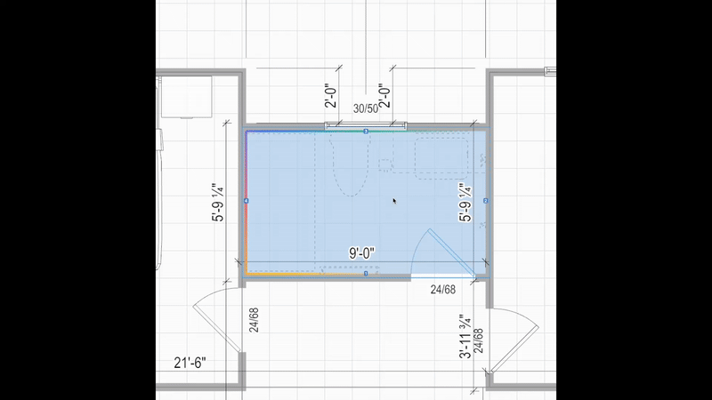
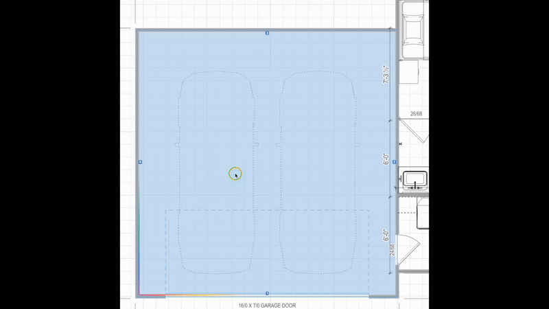
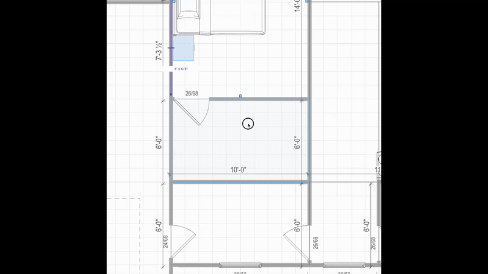
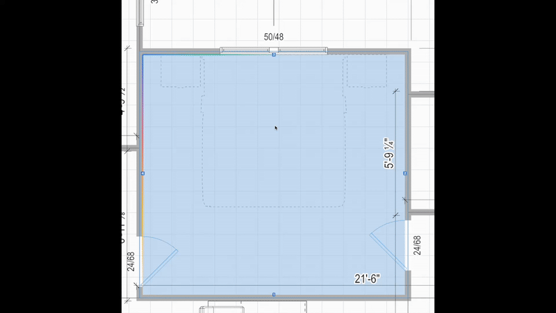
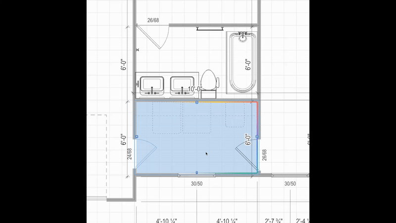
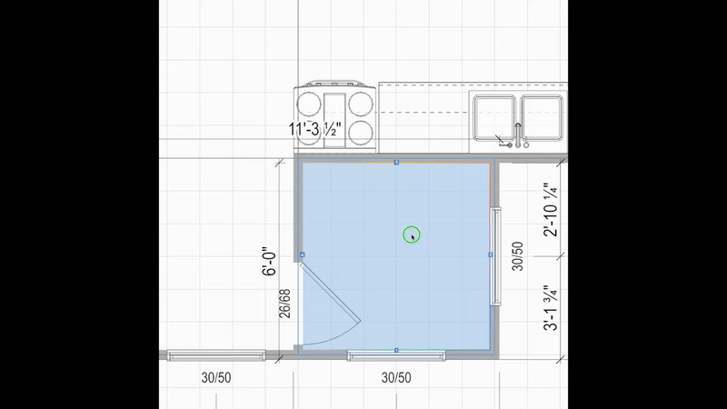
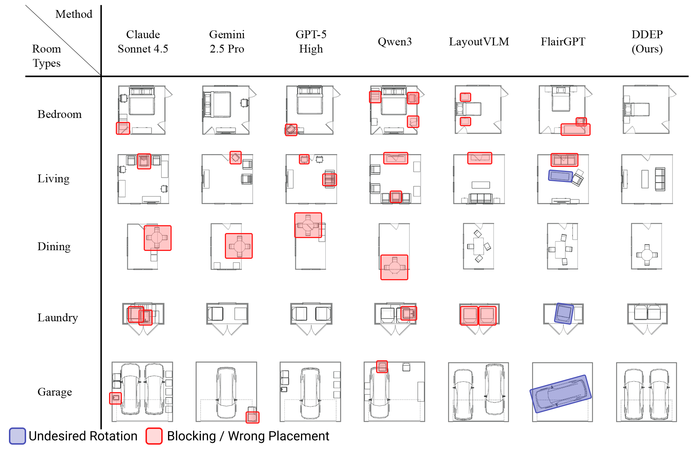
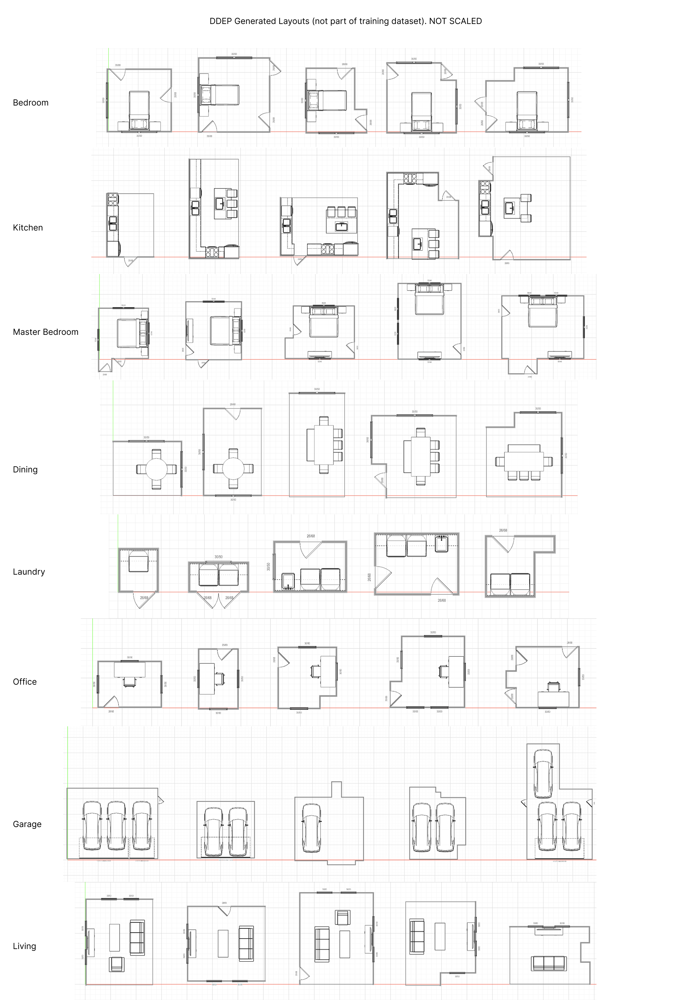
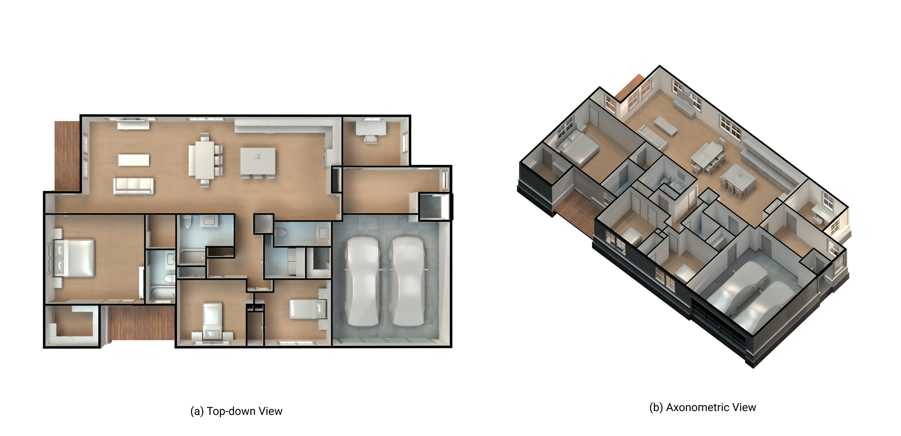
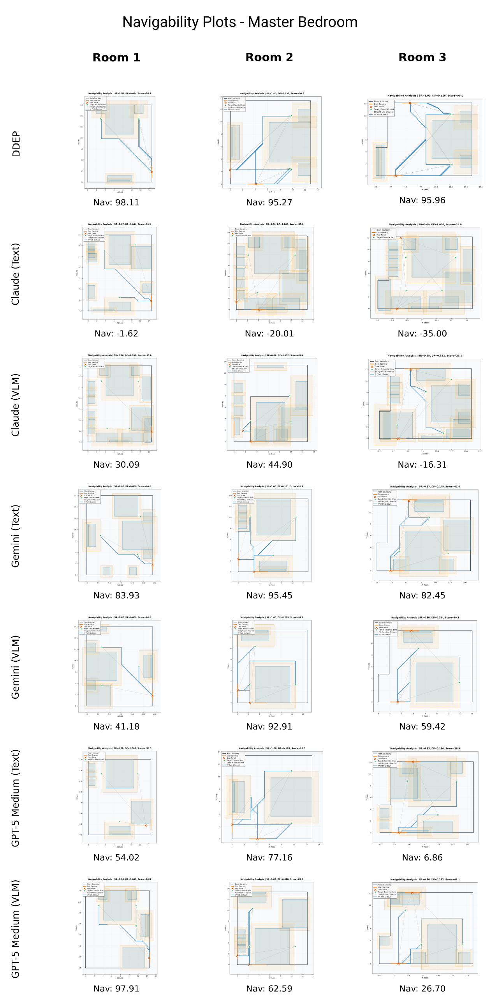
A BIM tokenization scheme with a mixed-type embedding module that unifies categorical and continuous architectural features.
SBM supports both retrieval (encoder-only) and generative layout synthesis (encoder-decoder DDEP) in a single architecture.
Rigorous benchmarks on a professional BIM dataset demonstrating superior scene coherence, geometric validity, and constraint satisfaction.
Modestly sized, domain-specific models over well-designed tokenizations outperform much larger general-purpose systems on layout quality.
@inproceedings{sbm2026euvip,
title={BIM-Native Tokenization for Constraint-Aware Room Layout Synthesis},
author={Ladron de Guevara, Manuel and Rhee, Jinmo and Bidgoli, Ardavan and Razgaitis, Vaidas and Bergin, Michael},
booktitle={Proceedings of the 14th European Conference on Visual Information Processing (EUVIP)},
year={2026}
}